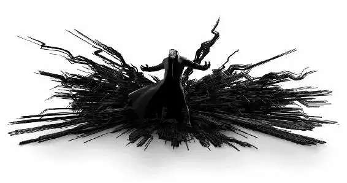

The car skidded to a stop. When Hiro saw who was driving, he blinked a couple of times and smacked himself in the head. Wasabi was the driver! The rest of the group was jammed into the car with him.
“Hiro?” Wasabi said.
“No, no, no! Get out of here! Go!” Hiro yelled, knowing they had no idea what danger they were walking into. He couldn’t figure out why they were there in the first place. Then he looked at Baymax and remembered. The big robot had contacted his friends to improve his health.
Wasabi climbed out of the car. “Dude, what are you doing here?” He looked around at the grimy docks.
“Nothing. I’m fine,” Hiro whispered as they all climbed out of the car.
But Wasabi was staring at the robot. “Is that Baymax?”
Hiro moved quickly to his friend and tried to push him back toward the vehicle. “Yeah, but you really—”
Go Go asked, “Uh, why is Baymax wearing carbon-fiber underpants?”
“I also know karate,” Baymax said.
Hiro took a deep breath. “You guys need to go, okay?”
“No,” Honey said. “Don’t ... don’t push us away. We’re here for you.”
Baymax nodded. “Those who suffer a loss require support from friends and loved ones. Who would like to share his feelings first?”
Hiro cringed as Fred said, “I’ll go. Okay, my name is Fred, and it has been thirty days since my last—” He stopped, staring up at something above their heads. “Holy mother of Megazon!” he said as the shipping container behind them began to rise.
It was being lifted by microbots!
Then the masked man from the warehouse appeared directly behind the container.
“Am I the only one seeing this?” Fred shouted.
Honey raised her phone and quickly took a photo. The flash blinded the villain for a second. Then, furious, he hurled the shipping container at them.
The friends scrambled out of the way as Baymax jumped up and caught the falling container.
“Go! Baymax, get him!” Hiro cheered. Go Go grabbed Hiro’s arm and pulled him into Wasabi’s car.
“No! What are you doing?” Hiro yelled as they all piled in behind him. “Baymax can handle that guy!”
THUMP! Something had hit the car roof. It was Baymax.
“Oh, no,” Baymax said.
Baymax’s rear end was wedged in the sunroof when Wasabi floored it. The car zoomed away from the pier with the masked man and the microbots right behind it.
Go Go narrowed her eyes. “Hiro. Explanation. Now.”
“He stole my microbots! He started the fire! I don’t know who he is!” Hiro said as a swarm of microbots streamed toward the car.
“Baymax! Palm-hill strike!” Hiro said. Baymax leaned his armored hand out, and when the microbots hit it, they scattered in every direction.
The car swerved off course.
“Hard left!” Go Go shouted, and they turned a corner with tires squealing.
Fred suddenly brightened like a bulb. “The mask ... the black suit ... we are under attack from a super villain, people! A real bad guy— a Yokai! I mean, how cool is that?” he said as the car whipped around a corner and jolted to a stop.
“Why are we stopped?” Go Go asked.
“The light’s red!” Wasabi exclaimed.
Everyone groaned.
“There are no red lights in a car chase!” Go Go screamed.
Wasabi nodded and gunned it. Then he leaned out the window, looked toward Yokai, and yelled, “Why are you trying to kill us?”
Yokai hurled a car at them in response. Terrified, Wasabi clicked on his turn signal and screeched around a corner.
Go Go was furious. “Did you just put your blinker on?”
Wasabi cringed. “You have to indicate your turn! It’s the law!”
Go Go couldn’t take another second. She took out her gum, stuck it on the dashboard, pushed back Wasabi’s seat, and slid onto his lap. She grabbed the wheel and slammed on the gas pedal with her foot. The car hurtled forward.
Hiro moved to take Go Go’s spot in the front seat, yelling, “Stop! Baymax can take this guy!” But the passenger door suddenly swung open, and out tumbled Hiro.
Baymax grabbed Hiro’s hoodie seconds before he hit the pavement. “Seat belts save lives,” Baymax said. “Buckle up every time!”
Go Go looked into the rearview mirror. There was nothing behind them. For a moment, it seemed Yokai and the microbots had given up. Go Go smiled—then saw that she was driving on a ramp formed by millions of microbots!
Before she knew it, the ramp turned into a tunnel that was closing around them. Up ahead, the tunnel’s exit was closing fast!
Wasabi threw his hands over his eyes as Go Go zoomed toward the tunnel’s exit. Hiro bracedhimself and yelled, “Baymax, hold on!”
“We’re not going to make it!” Wasabi howled. But Go Go steered the car onto the wall of the tunnel, lifted into a one-sided wheelie, and squeezed the car through the tunnel’s narrowing exit.
“Aaaah!” everyone yelled as the car went sailing.
“We made it!” Wasabi cheered. But his relief turned to horror when he saw that the tunnel’s exit was right over the bay. Everyone screamed as the car splashed nose first into the water and started sinking.
Filling with water, the car began to sink. Yokai watched and waited until it disappeared. Then he and the microbots retreated into the darkness.
